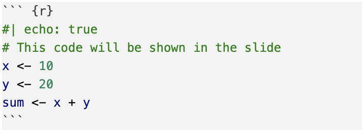
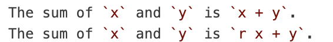
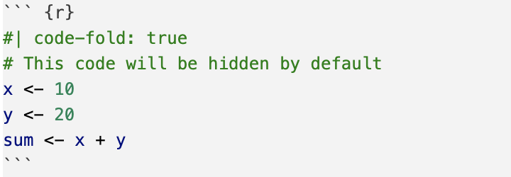
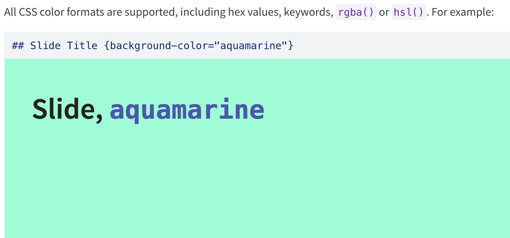
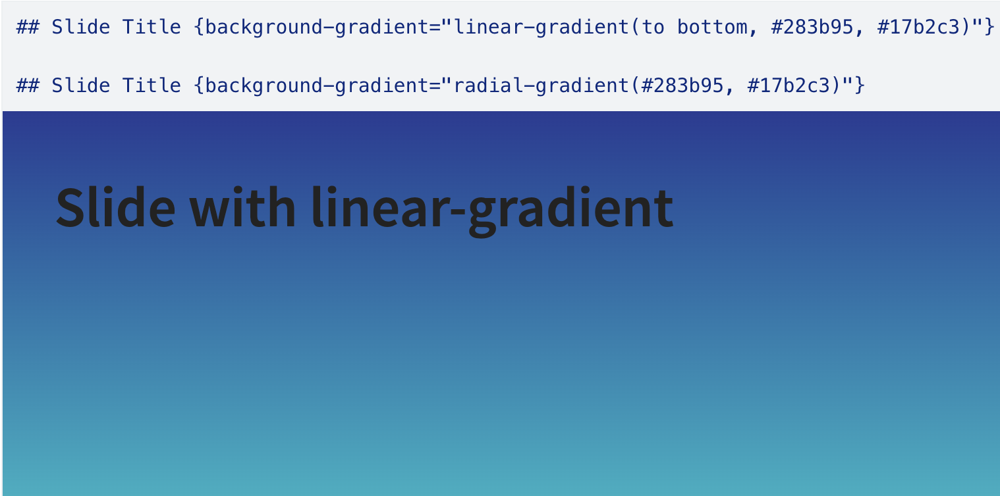

Revealjs Slides
Creating HTML Slides
Quarto Revealjs Slides
About
These slides will introduce creating RevealJS slides with Quarto Markdown.
What can we do with slides?
As with any other .qmd documents:
- Text
- Code chunks
- Figures
BTW: The slides in STAT 159 are made with Quarto & Revealjs
Also:
- In-line code
- Code folding
- Slide backgrounds and gradients
- Bulleted lists and incremental bullets
And much more!
YAML Heading of a Slide Document
demo-slides.qmd
We recommend setting embed-resources to true to make sure all resources are included in the rendered HTML document.
Basic Elements
Formatting Slides
- Quarto allows you to create slides using markdown syntax
- Use
#or##to separate slides - One
#denotes a section, for which a title slide will be created. - Two
#s denote a slide title, for which a regular slide will be created. - Three or more
#s creates subheaders as usual.
Headers
Lists
Lists are created as with Markdown.
Bullets
- Value 1
- Value 2
Numbered
- Value 1
- Value 2
Incremental Bullets
We can use ::: to create incremental bullets.
When rendered, they will be displayed as follows:
- First bullet
- Second bullet
- Third bullet
Tables
Tables are created as with Markdown.
| x | y | z |
|---|---|---|
| 0 | 0 | 0 |
| 1 | 1 | 0 |
Familiarities: Font Face
You can control the font face as with R Markdown.
- Bold.
- Italicized.
- Bold and italicized!
monospaced
Links and Images
Links and images can be included as with R Markdown.
Have you heard of wormholes?

Here’s a 2D representation from Wikipedia.
Figures
Figure Basics

Figure Alignment
Figure Sizing
Figure Layout
::: {#fig-logos layout-ncol=2}
{#fig-logo1}
{#fig-logo2}
R logos
:::Columns
Adding Code
Adding code
Code is added the same way as in regular qmd files, using code chunks.
But we can also do a lot more with code chunks in slides, such as…
Echo True
By default, code chunks in slides are hidden. You can change this behavior by using the echo option.

In-line code
You can also include in-line code using backticks:

In-line code
This code outputs:
The sum of x and y is x + y.
The sum of x and y is 30.
Useful for:
- showing code without running it
- showing formulas or calculations without needing a full code chunk
Code Folding
You can fold code chunks to hide them by default and allow the audience to expand them if they want to see the code.
In YAML header:
Code Folding
In each code block that you want to fold:

Backgrounds
Backgrounds
Another formatting option is to add backgrounds to your slides. You can use either a single color or a gradient.
Background: Single Color

Background: Gradient

Transitions
Transitions by Slide
You can specify the transition and/or transition-speed for an individual slide:
You can also specify separate in and out transitions, for example:
Fragments
Fragments: Transitions
Fragments give Quarto Markdown an expressive power not found in R Markdown: transitions.
The simplest way to do this is by separating sections between 3 dots (with a space between each). See below:
Fragments: Syntax
For more advanced transitions, we introduce a new syntax:
- Surround your text with three colons (
:::) on each end. - As with code chunks, we will specify options in curly brackets
{ ... }. Start with.fragmentto create a fragment. - You can think of this as a format chunk by noting the similarity in syntax to code chunks, which instead of colons use backticks.
Fragments: Classes
You provide a fragment class in the curly brackets to specify a transition. Here are some examples, showing you can…
… highlight text.
… shrink and grow text.
… fade out text.
… fade in text.
See here for a list of all available classes.
https://quarto.org/docs/presentations/revealjs/advanced.html
Fragments: Classes
Here’s the code for the shown fragments.
- You need to add a dot (
.) before the class name. - Unlike code chunks, which separate options with commas, here we separate options with spaces.
Fragments: Multiple Classes
You can specify multiple classes to combine transitions.
Pay attention to this!
Fragments: Nesting
You can nest fragments1 to provide multiple transitions for one chunk of text. They will be executed in order (from the outer to inner fragments).
I’m feeling animated today!
Styling with CSS
You can make changes beyond the provided fragment classes. For example, if you’re familiar with CSS, you can control the style of the text directly:
Here’s some mutilated text! :)